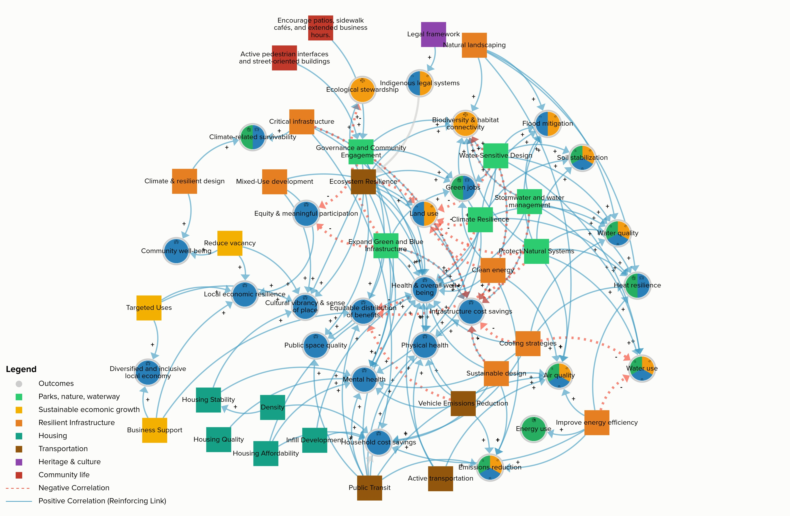
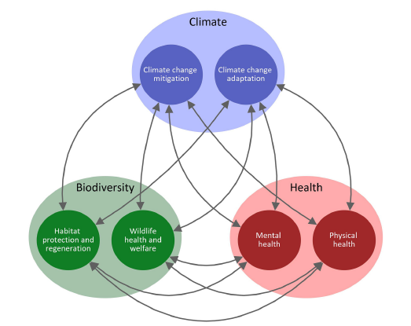
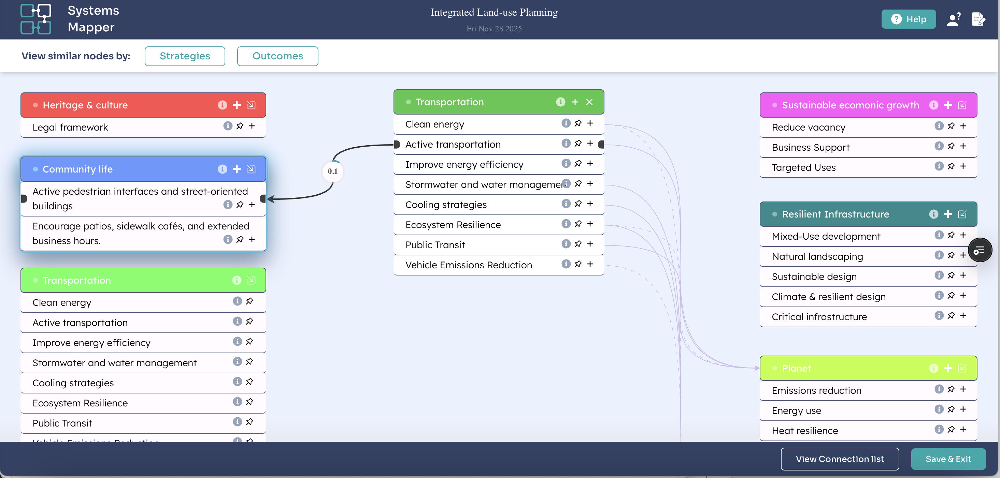

PhD research project
Collaborative Land-Use Planning in Fort Saskatchewan
Exploring collaborative land-use planning through climate-biodiversity-health lenses for local sustainability and resilience

Project Overview
Supporting Collaborative Land-use Planning
Communities today face overlapping challenges related to climate change, biodiversity loss, and public health. Addressing these challenges requires more than technical analysis. It also requires the active participation of diverse stakeholders so that people’s concerns, needs, interests, and values are reflected in public decisions.
This research explores how visualization can help make complex relationships more visible and support stronger connections to place. By translating alternative futures into visual and interactive forms, the project examines how communities can reflect on land-use choices, discuss trade-offs, and support more inclusive long-term planning.
This is an ongoing PhD research project at the University of Victoria, developed as part of TRIAS Lab. This is not an official City planning and does not represent formal City plans, findings, or recommendations. The materials shared here are intended for research and discussion purposes only.
Research lens
Climate-Biodiversity-Health Nexus
The climate-biodiversity-health (CBH) nexus, developed by Dr. Robert Newell, is used as a guiding lens to identify interconnections, co-benefits, and trade-offs across municipal planning strategies that traditional processes often address in isolation, leading to fragmented policies and missed opportunities for integration.
Rather than treating climate change, biodiversity loss, and public health as separate issues, the CBH nexus helps identify relationships, trade-offs, and co-benefits across these systems. In this project, it provides a starting point for systems mapping, scenario development, and participatory visualization.

Methods
Community-engaged research process
The project adopts a community-engaged approach, collaborating with local governments, non-governmental organizations, and other stakeholders to co-produce knowledge and tools for integrated community sustainability planning.
Phase 1: Understand the systems
Analyze planning documents and conduct workshops to identify priorities and map interconnections.
Phase 2: Develop Scenarios
Co-create planning scenarios through participatory spatial mapping.
Phase 3: Evaluate scenarios
Develop realistic visualizations and assess their effectiveness through a community open house
A place-based planning context
Fort Saskatchewan, AB
Fort Saskatchewan, AB is located on Treaty 6 Territory and Métis Nation of Alberta District 11, within the Edmonton Metropolitan Region. The city brings together urban growth, parks and recreation, river valley landscapes, industrial activity, agricultural land, community infrastructure, and historic and cultural amenities.
Fort Saskatchewan is also reviewing its land-use framework through a new Land Use Bylaw process. This makes the project especially relevant to a real-world planning setting and creates an opportunity to generate practical insights into how visual and participatory tools can support community-informed planning conversations.
Planning relevance
As a mid-sized suburban municipality within the Edmonton Metropolitan Region, Fort Saskatchewan provides a meaningful context for examining contemporary land-use planning challenges related to growth, sustainability, community engagement, and the creation of more complete, self-reliant, and connected communities.
Current progress
Phase 1: Understand the systems
Phase 1 focuses on identifying key land-use issues, priorities, and relationships relevant to the Fort Saskatchewan study site. It begins with a review of municipal planning documents to identify existing themes related to climate, biodiversity, and health. These themes are then translated into initial systems mapping materials using Systems Mapper.
The first workshop with planners and project partners will explore relationships among key land-use issues, community priorities, and challenges. Systems Mapper will be used to support discussion, help participants visualize complex relationships, and reflect on place-based planning priorities.

Let’s Connect
Feel free to reach out, I'd love to connect!